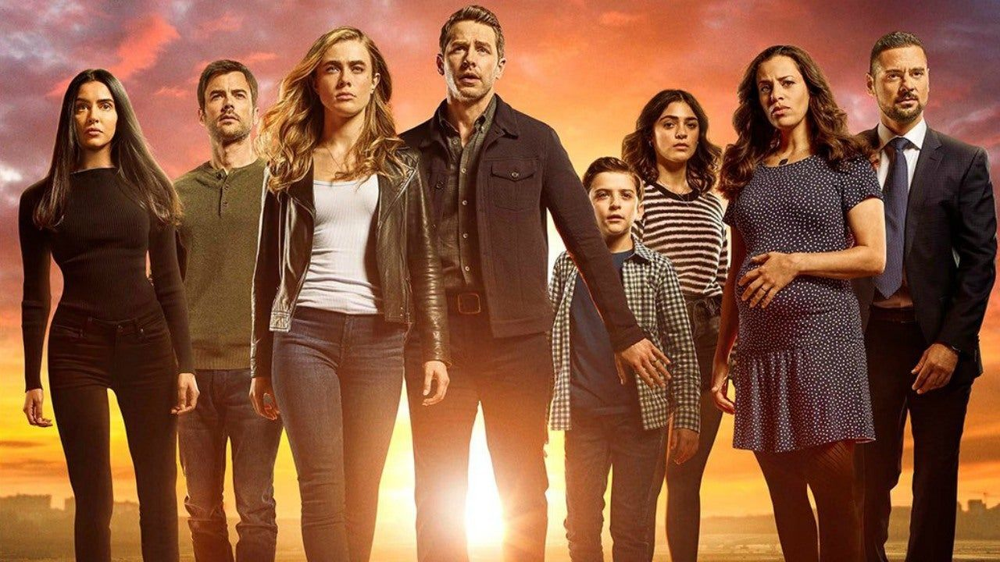
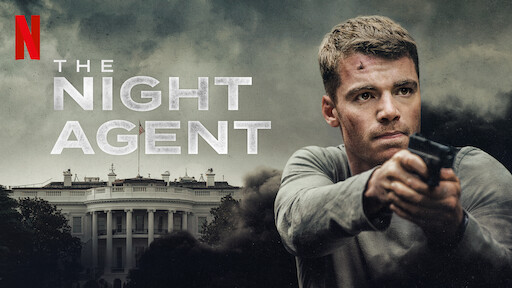

Manifest (2018)

2013 yılında Jamaika'dan hareket eden 828 sayılı uçak seferine katılan 191 yolcunun hikayesini anlatıyor. Uçak, New York'a iniş yaptığında
her şey normal görünse de, yolcuların farkınnda olmadığı bir şey vardır: 5 yıl geçmiştir ve onlar için zaman durmuştur.Onların ölümü kabullenmiş
olan aileleri için de bu kolay olmayacakır ve yolcular zamanla kendilerinin bile inanmakta zorluk çekeceği seyler yaşamaya başlar.
Bölüm Sayısı: 62
Sezon Sayısı: 4
İzlemek için önerilen siteler: Netflix.com ,
yabancidizi.com
Benim fikrim: İnanılmaz güzel bir diziydi, çok uzun olmasına rağmen hiç sıkılmadan izledim ve kısa sürede bitirdim.
Sonu belki çok tatmin edici olmaz ama kesinlikle izlemeye değer bir dizi.
The Night Agent (2023)

Peter Sutherland, Beyaz Saray'ın bodrum katında, geceye kadar hiç çalmayan bir telefonla
çalışan düşük seviyeli bir FBI Ajanıdır. Ancak beklenmedik bir anda kendisini büyük bir komplonun içinde bulan Peter, ulusu
kurtarmak için ABD hükümetinin en üst düzeylerinde faaliyet gösteren bir Rus köstebeği durdurmak için bir insan avına çıkar.
Bölüm Sayısı: 10
Sezon Sayısı: 1
İzlemek için önerilen siteler: Netflix.com ,
yabancidizi.com
Benim fikrim: Sürükleyici güzel diziydi ama bence öyle aman aman da değil yine de hiçbir şey bulunmadığı zaman izlenilebilir:)